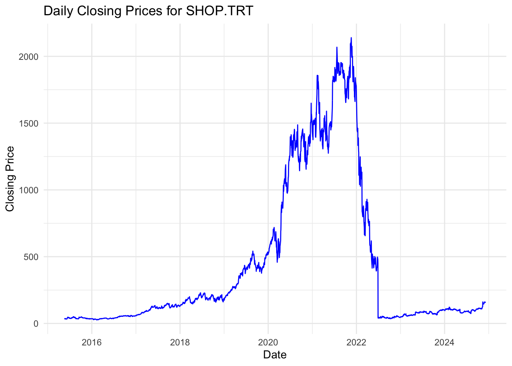
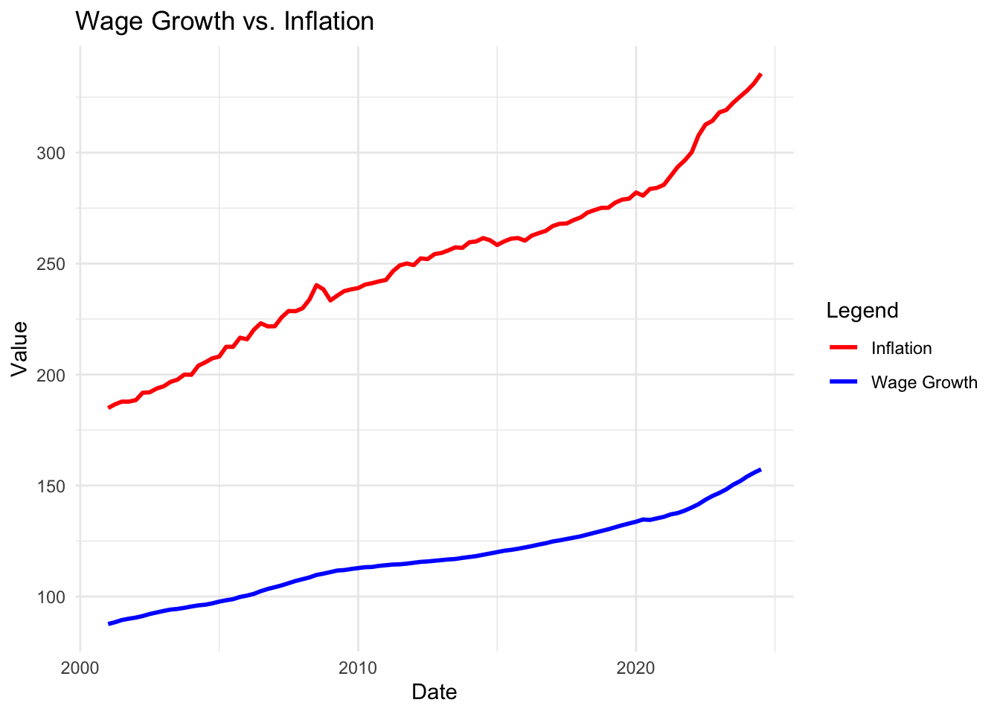
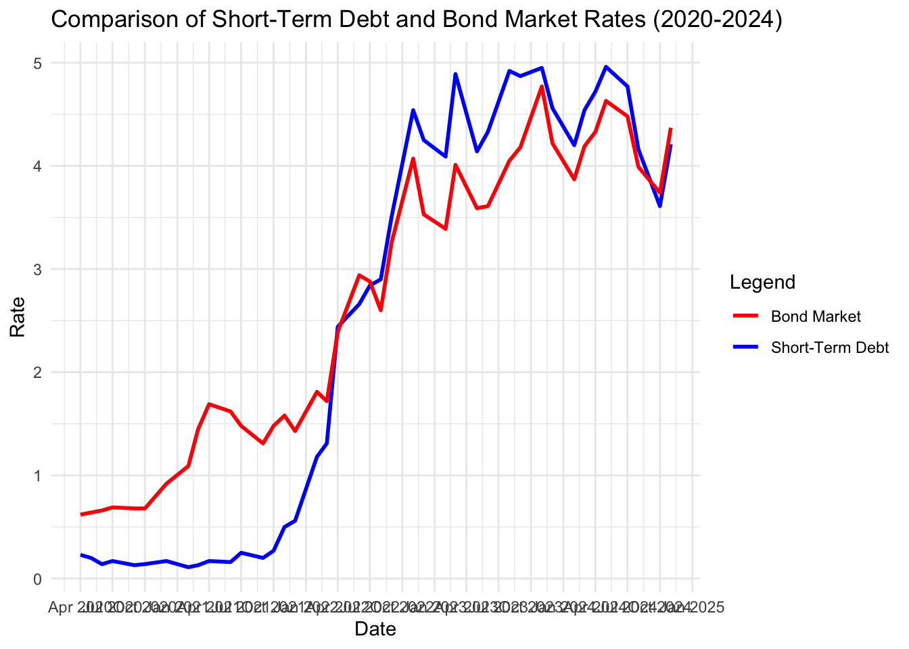

Inflation <- read.csv(" Consumer_Price_Index.csv")MP04
Mini-Project #04: Monte Carlo-Informed Selection of CUNY Retirement Plans
In this mini-project, I used historical financial data and a bootstrap inference strategy to estimate the probability to choose between the traditional defined-benefit Teachers Retirement System (TRS) plan and the newer defined-contribution Optional Retirement Plan (ORP). With the TRS system, after retirement, employees will continue to receive regular payments from their CUNY for the rest of their lives, based on a predetermined formula. CUNY promises a specific amount of retirement benefits regardless of the market’s performance. If the market is underperforming expectations, CUNY makes up the gap; if the market overperforms expectations, CUNY pockets the excess. With the Optional Retirement Plan, both the employee and employer contribute to a retirement account, which the employee invests in mutual funds of their choice. The investments grow tax-free until retirement, when withdrawals begin. Unlike the TRS, the ORP is a defined-contribution plan, meaning only the contributions are fixed; the final balance depends on investment performance.
Data Sources - AlphaVantage & FRED
For this assignment we used data from two economic and financial data sources, AlphaVantage [^1] and FRED [^2] .
Set-Up and Exploration
To begin the Monte Carlo analysis, I gathered historical data using FRED and AlphaVantage covering the following:
Wage growth: (Employment Cost Index: Wages and Salaries: State and Local Government: All Workers) 1
Inflation: (Consumer Price Index for All Urban Consumers: All Items in New York-Newark-Jersey City, NY-NJ-PA) 2
US Equity Market total returns (S&P 500) 3
International Equity Market total returns [^6]
Bond market total returns (Market Yield on U.S. Treasury Securities at 10-Year Constant Maturity, Quoted on an Investment Basis) [^7]
Short-term debt returns (Market Yield on U.S. Treasury Securities at 2-Year Constant Maturity, Quoted on an Investment Basis)
Since I have very little background in finance, I was unsure if my data would assist me in choosing a retirement plan so I based by selection on what I believed would be a best fit . I selected wage data that covers State and Local Government: All Workers based on the fact CUNY is a state school. For International Equity Market Total returns, I landed on shop.trt because Alphavantage described it as a Sample ticker traded in Canada - Toronto Stock Exchange and I’ve wanted to visit Toronto. After collecting my data, I needed to make sure all data sets were converted to monthly.
Employment Cost Index monthly frequency conversion: Wage growth:
Inflation Data Cleaning
The inflation data had dots representing NA, I first needed to convert the dots to NA then remove the NA data
Inflation
library(dplyr)
library(lubridate)
Inflation <- Inflation %>%
mutate(DATE = as.Date(DATE)) %>% # Convert DATE column to Date type
filter(year(DATE) >= 2001 & year(DATE) <= 2024) %>% # Filter rows for years 2001 to 2024
mutate(DATE = floor_date(DATE, "month")) %>% # Downsample to monthly frequency (modify DATE directly)
group_by(DATE) %>% # Group by DATE
summarize(CUURA101SA0 = first(CUURA101SA0)) %>% # Take the first Rate value for each month
ungroup()US Equity Market total returns(SPY500)
US_total_returns <- read.csv("SP500.csv")US_total_returns <- US_total_returns %>%
mutate(across(everything(), ~ na_if(.x, ".")))
# Remove rows with NA values
US_total_returns <- US_total_returns %>%
drop_na()library(dplyr)
library(lubridate)
# Ensure no NA values in SP500
US_total_returns <- US_total_returns %>%
drop_na(SP500)
# Downsample US_total_returns to a monthly frequency
US_total_returns <- US_total_returns %>%
mutate(DATE = floor_date(as.Date(DATE), "month")) %>% # Change DATE to the first of each month
group_by(DATE) %>% # Group by the new monthly DATE
summarize(SP500 = first(SP500)) %>% # Take the first SP500 value for each month
ungroup()International Equity Market total returns
# Install jsonlite if not already installed
if (!require(jsonlite)) {
install.packages("jsonlite")
}Loading required package: jsonlite# Load the jsonlite library
library(jsonlite)
# Define the new API URL
url <- "https://www.alphavantage.co/query?function=TIME_SERIES_DAILY&symbol=SHOP.TRT&outputsize=full&apikey=demo"
# Fetch the data
response <- request(url) |> req_perform()
# Parse JSON content
data <- response |> resp_body_string() |> fromJSON(flatten = TRUE)
# Extract the time series data
time_series <- data$`Time Series (Daily)`
# Convert to a data frame
time_series_df <- as.data.frame(do.call(rbind, time_series))
time_series_df$Date <- rownames(time_series_df)
rownames(time_series_df) <- NULL
# Rename columns
colnames(time_series_df) <- c("Open", "High", "Low", "Close", "Volume", "Date")
# Convert numeric columns
time_series_df <- time_series_df |>
mutate(across(c(Open, High, Low, Close, Volume), as.numeric),
Date = as.Date(Date))
# Calculate daily returns
time_series_df <- time_series_df |>
arrange(Date) |>
mutate(Return = (Close / lag(Close) - 1) * 100)
# Visualize closing prices
library(ggplot2)
ggplot(time_series_df, aes(x = Date, y = Close)) +
geom_line(color = "blue") +
labs(title = "Daily Closing Prices for SHOP.TRT", x = "Date", y = "Closing Price") +
theme_minimal()
Bond market total returns
Bond_market <- read.csv("Bond_market.csv")Bond_market <- Bond_market %>%
mutate(across(everything(), ~ na_if(.x, ".")))
# Remove rows with NA values
Bond_market <- Bond_market %>%
drop_na()library(dplyr)
library(lubridate)
Bond_market <- Bond_market %>%
mutate(DATE = as.Date(DATE)) %>% # Ensure DATE is in Date type
filter(year(DATE) >= 2020 & year(DATE) <= 2024) %>% # Filter for years 2020 to 2024
group_by(DATE) %>% # Group by the original DATE
summarize(DGS10 = first(DGS10), .groups = "drop") %>% # Summarize by the first DGS10 value per DATE
ungroup()Short-term debt returns
Short_term_debt <- read.csv("Short_term_debt_returns.csv")Short_term_debt <- Short_term_debt %>%
mutate(across(everything(), ~ na_if(.x, ".")))
# Remove rows with NA values
Short_term_debt <- Short_term_debt %>%
drop_na()library(dplyr)
library(lubridate)
# Assuming Short_term_debt has a DATE column and DGS2 as the interest rate column
Short_term_debt <- Short_term_debt %>%
mutate(DATE = as.Date(DATE)) %>% # Ensure DATE is of Date type
group_by(DATE) %>% # Group by DATE
filter(DATE == floor_date(DATE, "month")) %>% # Keep rows where DATE is the first of the month
summarize(DGS2 = first(DGS2), .groups = "drop") # Summarize DGS2 for the month
# Aggregate while keeping DATE as monthlyInvestigation and Visualization of Input Data
After collecting the data, I examined and understood key characteristics and relationships within it. This involved matching datasets and analyzing their relationships, such as identifying correlations and trends between variables.
library(ggplot2)
library(dplyr)
# Ensure that the columns are numeric
wage_growth_inflation <- wage_growth %>%
inner_join(Inflation, by = "DATE") %>%
mutate(average_wage_growth = as.numeric(average_wage_growth),
CUURA101SA0 = as.numeric(CUURA101SA0))
# Plot the relationship
ggplot(wage_growth_inflation, aes(x = DATE)) +
geom_line(aes(y = average_wage_growth, color = "Wage Growth"), size = 1) +
geom_line(aes(y = CUURA101SA0, color = "Inflation"), size = 1) +
labs(title = "Wage Growth vs. Inflation",
x = "Date",
y = "Value",
color = "Legend") +
theme_minimal() +
scale_color_manual(values = c("Wage Growth" = "blue", "Inflation" = "red"))Warning: Using `size` aesthetic for lines was deprecated in ggplot2 3.4.0.
ℹ Please use `linewidth` instead.
# Join short-term debt and bond market data on the DATE column
combined_data <- Short_term_debt %>%
inner_join(Bond_market, by = "DATE")library(dplyr)
library(ggplot2)
# Convert DGS2 and DGS10 to numeric
combined_data <- combined_data %>%
mutate(
DGS2 = as.numeric(DGS2),
DGS10 = as.numeric(DGS10)
)
# Plot the comparison
ggplot(combined_data, aes(x = DATE)) +
geom_line(aes(y = DGS2, color = "Short-Term Debt"), size = 1) + # Short-Term Debt rate
geom_line(aes(y = DGS10, color = "Bond Market"), size = 1) + # Bond Market rate
labs(
title = "Comparison of Short-Term Debt and Bond Market Rates (2020-2024)",
x = "Date",
y = "Rate",
color = "Legend"
) +
theme_minimal() +
scale_color_manual(values = c("Short-Term Debt" = "blue", "Bond Market" = "red")) +
scale_x_date(date_breaks = "3 months", date_labels = "%b %Y") # Adjust the x-axis to better show months
Citation
[^1]: https://www.alphavantage.co/
[^2]: https://fred.stlouisfed.org/
[^6] https://www.alphavantage.co/query?function=TIME_SERIES_DAILY&symbol=GPV.TRV&outputsize=full&apikey=demo
[^7] https://fred.stlouisfed.org/series/DGS10
[^8] https://fred.stlouisfed.org/series/DGS2